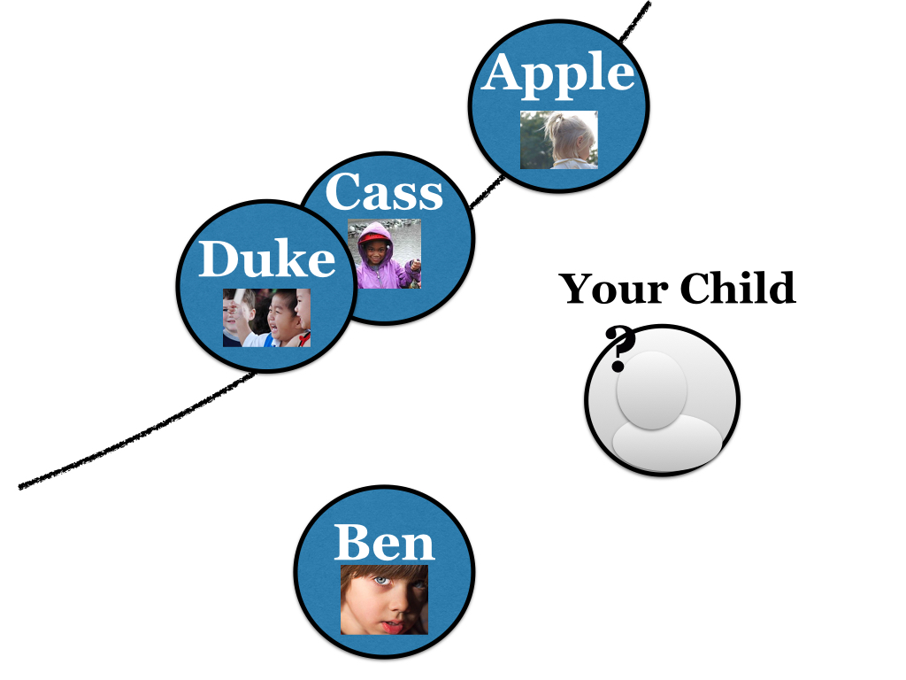
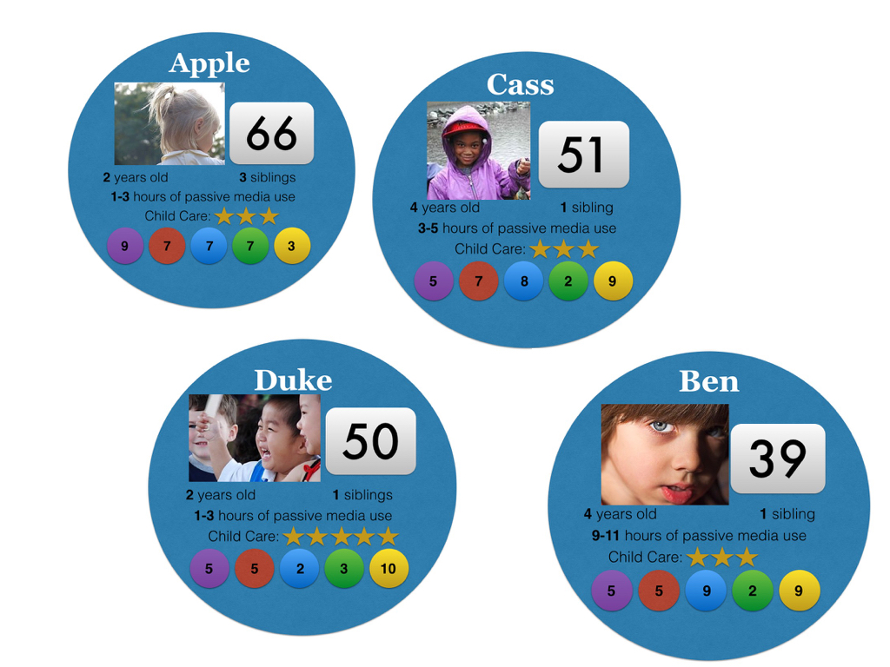
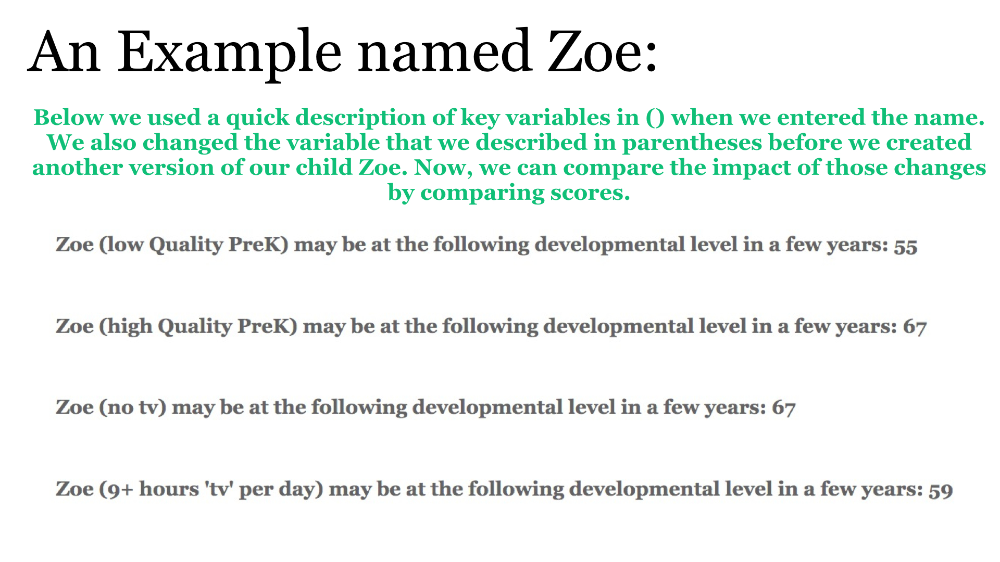
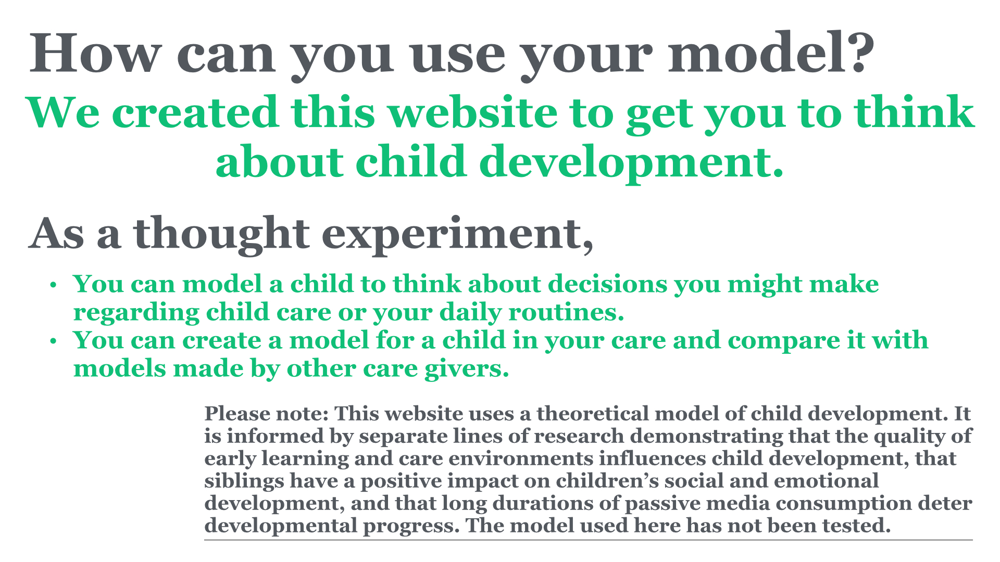

"Child Development is a dynamic interplay of factors unfolding within each child and between the child and their environment." This page models how a child's compentencies in different domains (e.g., Social and Emotional Development) are impacted by environmental factors (e.g., number of siblings) and interact with eachother to influence the child's developmental level a little bit later in life. Think of developmental level as seperate from age and as a more abstract way to represent a child's current ability. See how changing different factors (e.g., amount of time spent passively engaging with media) impacts how quickly your child develops.


The best way to think about the resutls of our model is in terms of where our children will place on their developmental trajectory in a few years. We can't say for sure that our point system has an absolute zero or that the increments between points are always the same. We've created a picture to represent what we think the scores would look like if our system was a little better - you'll see that we've put Cass a little higher than Duke. As you'll see below, their exact scores are very similar. How would you plot these scores?


You've learned about the 5 Domains of Child Development:
Social Emotional Development
Cognition (or Thinking Skills) and General Knowledge
Physical, Motor, Health and Well-Being
Language, Literacy, and Communication
Approach Towards Learning
You learned that states are currently creating Quality Rating and Improvements Systems (QRIS) to help families make more informed choices about early learning and care evironments.
And, you've learned about a few aspects of the environment that influence how children develop.
How many siblings your child has?
How much time your child spends a day passively watching media on different devices?
What is the Quality of your child's early care and learning environment?
Here are some ways to keep Learning:
Play around with different values to see how your child is influenced by different internal and environmental factors.
Create a snapshot of your child at different ages.
Remake one of our children and see how your changes impact their projected developmental level. You can enter something in their name to indicate your changes (e.g., Zoe works with developmental specialist).
Are your wondering how we calculated Developmental Level?
How would you compute it?
Reach out to us with your own formula and we'll send you ours.